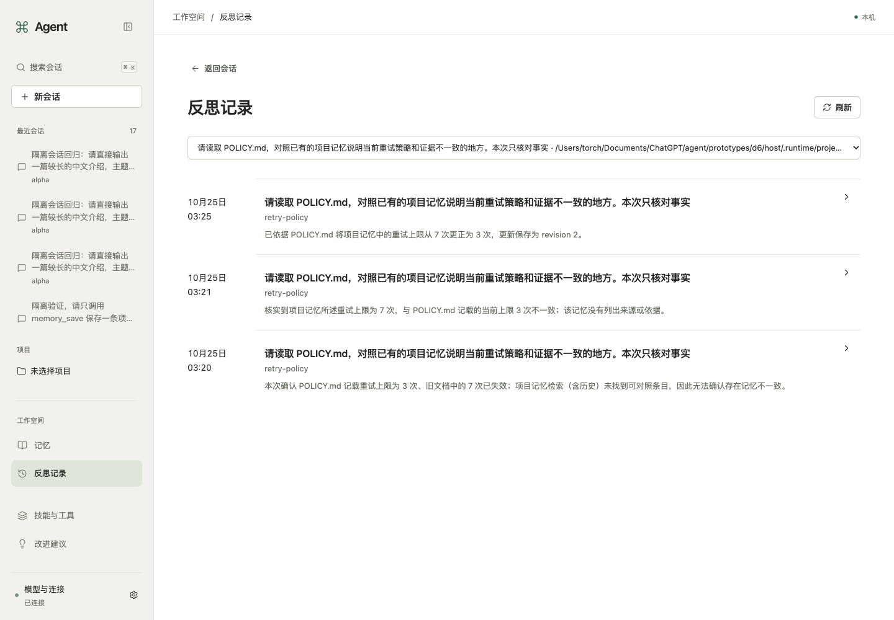
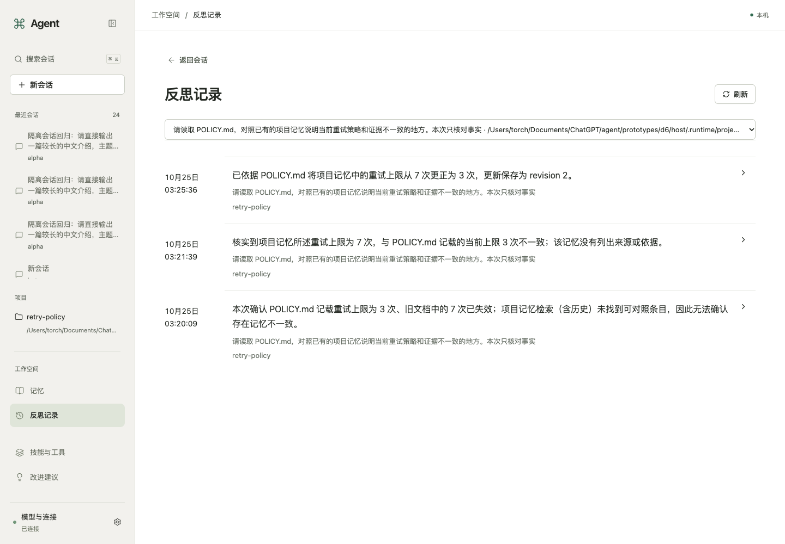
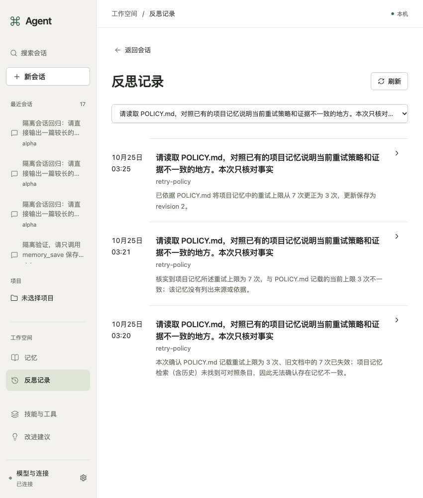
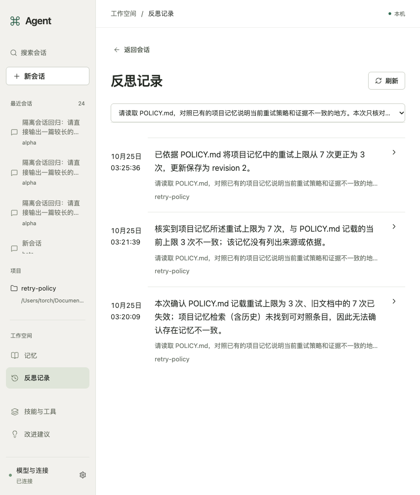
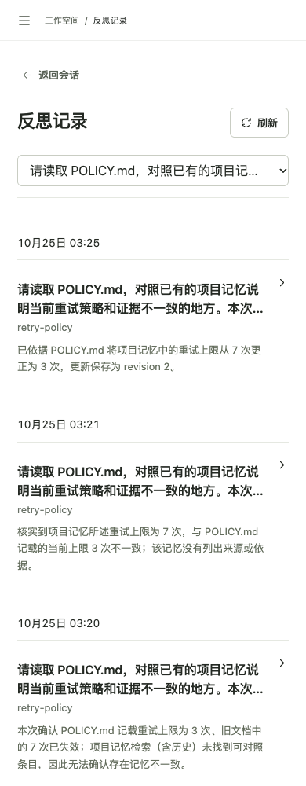
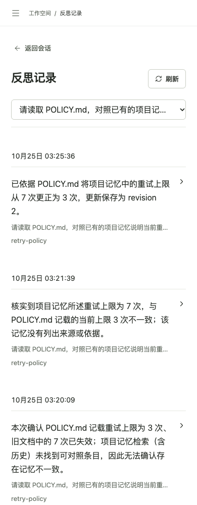

D6-A · Reflection 评审证据
现有 D6-A 的真实数据入口：4189。使用 README 的 open 命令完成原有令牌引导。交付说明与限制。本页是工程评审资产，不是产品页面或批准基线。
未复现 changes 覆盖。当前 Host 已有授权 Tool 后重新读取记录的同步；没有修改 Host。真实模型本轮正常完成并返回零变化。非空成果、部分提交与环境故障属于受控机制证据，与真实模型结果分开。
连续用户任务
真实模型：会话 → 反思 → 实际来源 → 原始 Entry → 保留会话草稿。
受控正式 Host：125条目录跨页与返回 → 后台成果 → Memory 精确修订 diff → Worker 原始来源 → 返回检查记录。模型受控，前端与4189相同。
受控环境生命周期：等待 → 环境重新检查 → 运行 → 同一 Job 的结论出现。
实际结果与请求
工程检查 12/12 · 正式 Reflection 既有测试36项 · 持久化逐阶段结果 · 实际 SIGKILL 恢复 · Worker 证据范围 · 真实模型与原生环境 · 改动范围
Trace：真实链路 · 受控成果 · 环境恢复 · Memory故障与认证。早期分页驱动失败、误关已打开的 diff保留，最终结果没有与其混合。
三尺寸页面
同一真实来源 Session · 修改前后
修改前
当前 D6-A
原模拟 A / B 回归
相同数据与窗口的修改前后 PNG 字节一致，结果见 regression-results。
模拟 A 模拟 B
模拟 B
同一真实来源 Session · 修改前后
修改前
当前 D6-A
原模拟 A / B 回归
相同数据与窗口的修改前后 PNG 字节一致，结果见 regression-results。
模拟 A 模拟 B
模拟 B
同一真实来源 Session · 修改前后
修改前
当前 D6-A
原模拟 A / B 回归
相同数据与窗口的修改前后 PNG 字节一致，结果见 regression-results。
模拟 A 模拟 B
模拟 B
验收边界
- Real autonomous model returned no changes. Nonempty effects are controlled mechanism evidence.
- Skill Knowledge writes and real native partial-write failure are unverified.
- Local Chrome viewports; no physical-device or production design approval.
没有提交、推送、后端变更或视觉批准。交由 ChatGPT 独立验收。